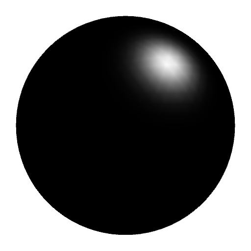
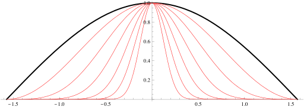

Specular lighting models glossy surfaces.
|  | $\V{c}_s=\V{c}_l\,(\V{n}\cdot\V{h})^\alpha$ |
The color of the light $\V{c}_l$ is modulated by the dot product of the normal $\V{n}$ and half-angle $\V{h}$ vectors, raised to a power.
That power $\alpha$ determines the tightness of the distribution of color.
A higher power gives a shinier material.